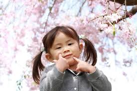

Filosofi di Balik Sebuah Hari · 子供を称えることの哲学
"Setiap anak adalah bukti bahwa dunia masih percaya pada kesempatan baru. Merayakan hari anak bukan tentang memberi hadiah tapi ini tentang mengakui bahwa ada yang berharga di dalam diri mereka, sebelum dunia sempat memberi tahu mereka sebaliknya."
— Renungan dari tradisi Kodomo no Hi · こどもの日の精神
"子供は世界の宝です"
— Anak-anak adalah harta dunia —
Anak-anak melihat dunia tanpa prasangka. Mereka bertanya bukan untuk terlihat pintar, melainkan karena benar-benar ingin tahu. Kejujuran ini adalah kualitas paling langka yang diam-diam kita rindukan.
Tidak ada anak yang bermain sambil memikirkan masa lalu atau masa depan. Mereka ada, utuh, di momen ini. Sesuatu yang justru diperjuangkan orang dewasa sepanjang hidupnya.
Kepercayaan anak adalah hal yang paling murni. Mereka percaya bahwa kebaikan itu nyata, bahwa mimpi bisa terwujud, bahwa seseorang layak dicintai begitu saja — apa adanya.
dunia yang terlihat pada pantulan mata anak-anak hari ini adalah satu-satunya hal yang dapat dipastikan akan membentuk dunia esok hari.
Merayakan anak-anak juga berarti mengingatkan diri sendiri: bahwa di suatu tempat dalam diri kita, masih ada anak yang pernah percaya pada hal-hal besar. Bahwa kita pun pernah berani jatuh dan bangkit tanpa beban. Hari anak adalah undangan untuk pulang — ke versi diri kita yang paling autentik.